Overview: DA in one figure
This paper answers a deceptively simple question: if the model already "knows" which part of the context it should attend to, why not let it say so? Existing sparse-attention methods sit outside the model and "guess" which tokens matter using proxy scores. DA instead hands the choice of attention span to the model itself — during its chain-of-thought the model declares "where I will look next" using three tags, <global> / <focus> / <local>, the engine parses those declarations exactly like tool calls, and then reads only the corresponding KV-cache blocks.
The whole mechanism is condensed in Figure 1: top left is the assembled prompt (a system instruction + a long context split into 12 "magic chunk" segments + the question + the DA instruction); on the right is the model's response, which freely alternates between the three modes; the attention-mask matrix at the bottom shows that the KV positions actually read at each decoding step (solid) are far fewer than the full context (dashed regions are skipped).
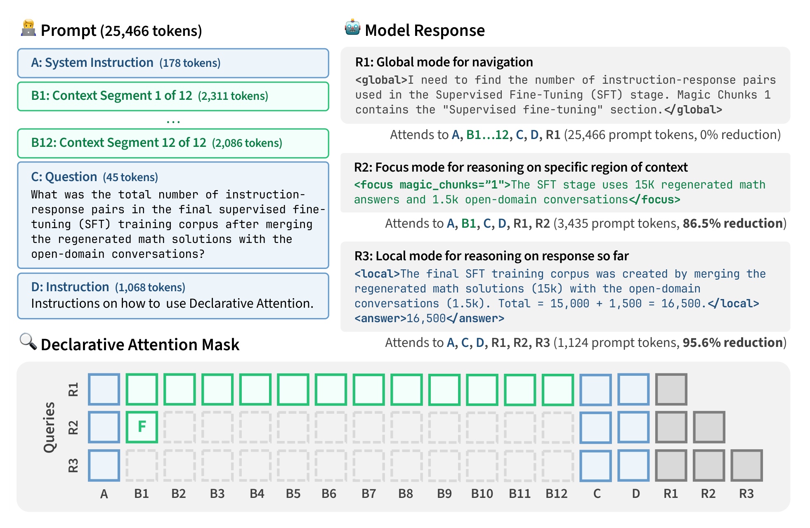
💡 Click any image to view the original 300-DPI version; click again or press Esc to close.
Background: why long-context decoding is expensive
Every generated token requires reading the entire KV cache
Transformer decoding attends over all previous tokens at every step. Even if the user asks about one detail inside a million-token conversation, the global-attention layers must stream the entire context's KV cache from HBM for every single token of the reply. The paper gives a visceral number: Qwen-3.5-397B-A17B at a 1M-token context loads about 15 GB of KV cache per sequence per step — comparable to the bandwidth needed to load the model's entire 17B active parameters. And this read is not amortized by batching: every sequence carries its own KV cache and must be read per-sequence.
Attention is naturally sparse — but which tokens matter is unknown in advance
In contrast to this exhaustive reading, abundant empirical work shows attention mass is concentrated on a tiny fraction of the context (Child et al. 2019; Zhang et al. 2023; Tang et al. 2024), with sparse patterns drifting at every step. The catch: the true attention scores are only known after computing the full attention matrix — "pick the important tokens first, then compute attention" is a chicken-and-egg problem. The paper points out the soft spots of both existing escape routes:
- Static heuristics (StreamingLLM's recency, H2O's historical attention magnitude): fixed rules cannot foresee which tokens a future query needs; long-context performance degrades visibly.
- Lightweight scans (Quest, SparQ, Double Sparsity, DeepSeek's DSA indexer, etc.): each step scores a cheap proxy representation of the KV cache and reads only the top-scoring subset. The constant factor shrinks, but per-step complexity remains O(N) — the scan itself still "passes over" the whole context.
Reframe: doesn't the model itself already know?
The paper's entry point is elegant. Prior work shows that a language model's hidden states already encode information about future tokens (Pal et al. 2023; Wu et al. 2024), and CoT prompting surfaces that latent computation as interpretable text (Wei et al. 2022). If CoT already exposes "what to think" as text, why not also expose "where to look" as text?
The only prior attempt in this direction, Self-Selected Attention Span (Jin et al. 2024), required per-task fine-tuning, hand-designed context partitioning and annotation syntax, and was validated only up to 2K-token contexts. This paper shows that on 2026-era models, the same behavior can be elicited zero-shot with one fixed task-agnostic prompt — covering 15 long-context tasks, two model families, and contexts up to 244K tokens, with no parameter updates.
Method: the Declarative Attention protocol
Three attention modes
DA splits generation into contiguous spans with a stable attention scope, each declared by a predefined tag. The division of labor:
| Mode | Context-segment visibility | Role in the protocol |
|---|---|---|
| <global> (default) | all segments | Navigate: survey the whole context, decide which segment to focus next, briefly say why (not the place to reason out the answer itself) |
| <focus magic_chunks="K"> | only the named segment | Extract: copy the needed values (names, numbers, dates…) verbatim from the named segment |
| <local> | no segment at all | Synthesize: plan and compose using only the question + extracted values + the response so far |
In every mode, three things stay visible: the question, the DA instruction, and the model's own response so far. The only difference between modes is how much of the long-context segment region is visible. A complete worked example from the paper (when did Acme go public):
<global> I need the founding year and the IPO year. The company history in Magic Chunk 2 should state the founding. </global> <focus magic_chunks="2">"Acme Corp was founded in 2003 in San Jose."</focus> <global> The IPO year is still missing. Magic Chunk 7 covers Acme's financial milestones. </global> <focus magic_chunks="7">"Acme Corp went public on the NYSE in 2011."</focus> <local>2011 - 2003 = 8 years.</local> <answer>8 years</answer>
Note the <local> span: while the model subtracts the two years, the context is completely invisible — it can only use the values it previously "copied down". DA does not prescribe how, when, or how often to use each mode — ordering and repetition are entirely the model's choice; the protocol only supplies the syntax and zero-shot guidance.
Context delivery: "magic chunks" as simulated tool calls
To <focus>, the model must be able to "name" regions of the context, so the long context is first cut into addressable segments. The paper aligns with the boundaries the model saw in training at two levels:
- Segmentation:target 2048 tokens, hard cap 2560. Segments are cut only on units that exceed the cap, walking a coarse-to-fine boundary hierarchy "paragraph blank line → single newline → sentence end → clause end → word boundary", so a cut never lands mid-word (a solid block of base64 with no spaces stays atomic). Segments concatenate back to the original text exactly — the partition is lossless.
- Formatting:each segment is headed Magic Chunk N and wrapped in a "simulated tool-call transcript" — it looks as if the model had fetched the document piece by piece with a
get_magic_chunktool, except the tool never actually runs; everything is in place before generation starts. Segment boundaries thus land exactly on the user/assistant/tool special tokens the model knows intimately from post-training, and the model tracks "where segment N starts and ends" far more reliably than with any novel delimiter. The name "magic chunk" is deliberate: it signals an arbitrary retrieval split, not the document's own section structure.
Decode-time intervention: the DA state machine
A DA state machine runs beside the inference engine, starting in the default global state and streaming the model's output: on the closing bracket of an opening tag (<focus magic_chunks="K"> or <local>) it switches modes; on the matching closing tag it returns to global. Note the <global> tag itself triggers no state transition — global is simply the default state between declarations; the tag is pure prompt scaffolding that helps the model organize its reasoning into spans with a declared scope.
The three soft requirements in the zero-shot prompt (Appendix F) reveal the authors' observations about failure modes: (1) use at least one <focus> — "skipping focus and guessing" is the most common failure; (2) end with a <local> as a commitment step, so the model doesn't collect a pile of values and forget which question it was answering; (3) inside <local>, don't try to "recall" content you never focused on — that is guessing; if a value is needed, go back to <global> and re-locate it.
System: vLLM integration and the roofline ledger
Block-aligned in-place masking, FlashAttention untouched
vLLM stores the KV cache in fixed-size blocks (typically 16–32 tokens) and its attention kernels read whole blocks — a mask that dropped individual scattered tokens would not save a single byte of memory traffic. So the DA state machine applies its mask at block granularity: retained token ranges are rounded outward to block boundaries, guaranteeing that any token the model declared is never dropped. The cost is at most one extra block at each end of every retained range (a few dozen tokens, negligible against a 2048-token segment). The result is an ordinary block list, and existing kernels (FlashAttention, Triton paged-attention) run as-is — they just read less. Same lineage as Native Sparse Attention's block-sparse principle.
The engineering surface is thin: the DA state machine is implemented as a hook on vLLM's attention metadata builder, rewriting the request's KV-cache block table at every decode step so the kernel sees only retained blocks. No kernel is modified; the scheduler is untouched.Qwen-3.6's global layers run FlashAttention and Gemma-4's hybrid attention runs a Triton paged-attention kernel — both backends share the same block-table rewrite logic.
The three regions that stay visible in any mode (Appendix B): (1) the attention anchor — the first 16 tokens of the prompt, occupied by a fixed short system instruction so the context never enters the sink; (2) the local window — from the question to the end of the prompt, so the model always knows what it is answering; (3) the generated response. <focus> additionally retains the named segment; <local> keeps only the three.
When does DA pay off? Roofline wall-time answers
DA trades 15–35% more decode steps for a lower per-step attention cost. In which deployment shape is that a net win? The paper keeps its books with roofline wall-time: every operation is billed at its own hardware ceiling, and the cost of a response is the sum over all decode steps. The quantity depends only on the hardware target, not on runtime choices like batch size:
where work is the FLOPs of compute-bound operations or the bytes of memory-bound ones, $R$ is peak FLOPS or peak bandwidth, and $u$ is the achieved utilization. At large batch, the two operation classes separate:
The structural asymmetry: FFN weight loading is amortized across the batch — at large batch it becomes compute-bound and its wall time grows only with decode-step count; attention KV reads are per-sequence, always memory-bound, and their wall time grows with both context length and step count. So in an optimized large-batch, long-context deployment, the attention term dwarfs the FFN term — in the Qwen-3.5-397B-A17B example at 1M context, one step reads 15.4 GB of attention state (~2.7 ms) while the 17B-active-parameter matmul needs only 34 GFLOPs (~0.019 ms), a gap of about 145× (120–255× across reasonable MFU/MBU variation — the conclusion does not hinge on the exact values). DA's per-step savings land exactly where decoding cost concentrates.
Experimental setup and main results
Models, tasks, and the three-arm comparison
Six models from two families: Gemma-4-{31B, 12B, E4B} and Qwen-3.6-27B, Qwen-3.5-{9B, 4B}, natively 256K input (128K for E4B). The headline comparison uses the two largest models. The benchmark suite covers 15 long-context sources grouped into two categories: single-span retrieval/reasoning (needle-in-a-haystack, single-doc QA, …) and multi-span reasoning (multi-doc QA, dialogue history, long-dependency QA, …), with contexts from the 6K scale up to code repositories averaging 1M tokens:
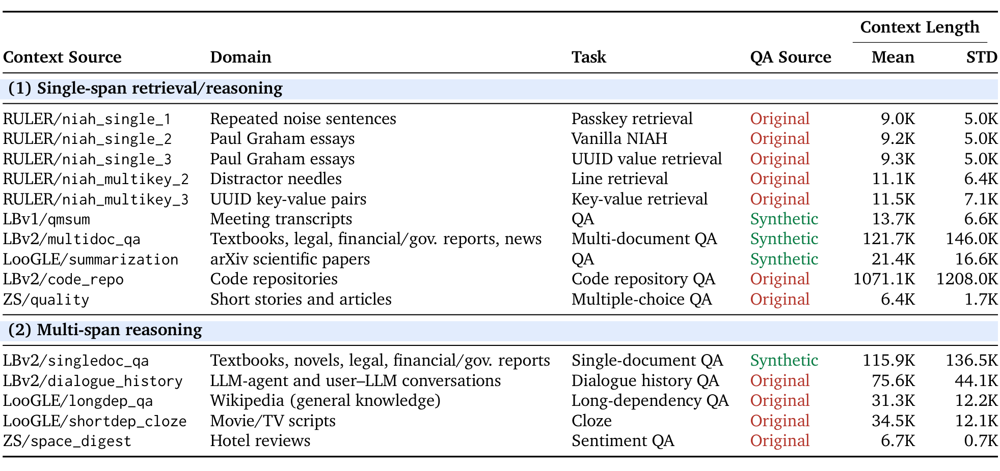
The three arms share the same final-answer format (an <answer> tag) and are graded by the same LLM judge, which cleanly isolates two factors:
- Vanilla:the original context laid out flat + a short instruction + full causal attention. Vanilla → DAnm measures the effect of the chunked prompt format.
- DA-no-mask (DAnm):the full DA prompt template, but no attention masking. DAnm → DA measures the effect of the attention mask.
- DA:the full protocol.
Grading: the LLM judge and its validation
Free-form answers cannot be exact-matched, so the paper first has Gemini-3-Flash write strict accept/reject rubrics per question, then uses Qwen-3.5-4B with thinking on as the judge. Is the judge trustworthy? Appendix D.2 validates it on a stratified sample of 2,993 responses — per-item agreement with the frontier judge Gemini-3.1-Pro is 98.53% (κ=0.940), per-cell accuracy correlation Pearson r=0.992, and disagreements are symmetric (McNemar p=0.65):
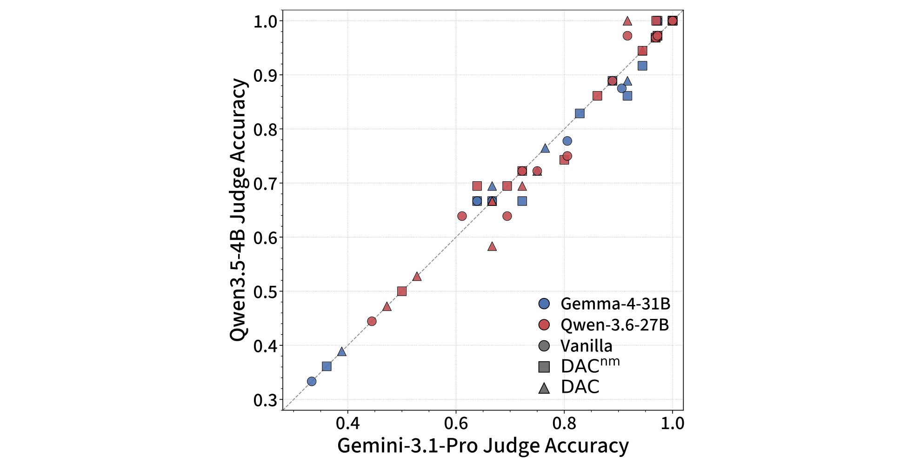

Main result: half the attention, a bit over one point of accuracy
Results across all 15 tasks are summarized in Table 2. Two headline numbers: on Gemma-4-31B, attention reads drop 52.0% (13.43M → 6.45M tokens/response) for a 1.27pp accuracy drop; on Qwen-3.6-27B, 31.1% (22.54M → 15.52M) for a 2.75pp drop.

But the averages hide the mechanistic story. Figure 2 decomposes the three arms into accuracy / decode steps / attended tokens, each normalized to that model's vanilla:
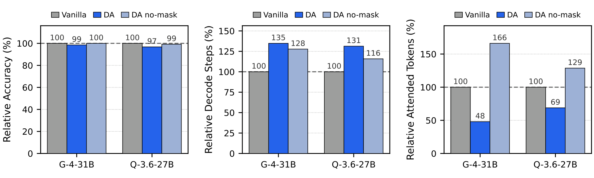
The two-factor ledger (vs. DAnm): the chunked prompt format alone is nearly free — on Gemma, DAnm accuracy exactly ties vanilla (87.01% vs 87.01%); on Qwen it trails by just 0.69pp. But DAnm's attention reads exceed vanilla by 66.2% / 28.8%. Adding the mask cuts reads by 71.1% (Gemma) and 46.5% (Qwen) relative to DAnm, flipping "66.2% above vanilla" into "52.0% below". On accuracy, the drop relative to DAnm (−1.27pp / −2.06pp) makes up most of DA's total cost — in other words, the mask is the source of all the efficiency and of most of the accuracy cost, while the format is almost free.
Scaling: bigger models get more accurate, longer contexts save more
Model scale: the accuracy gap narrows monotonically
DA makes two compound demands of the model: follow the protocol (parseable tags, valid chunk references, coherent mode sequencing) and answer correctly under restricted information — both draw on general capability. Figure 3 shows relative accuracy rising monotonically with scale in both families: Gemma climbs from 29% at E4B to 99% at 31B; Qwen from 64% at 3.5-4B to 97% at 3.6-27B. The smallest model, Gemma-4-E4B, collapses to 29%, and the direct cause is protocol failure — its <focus> parse success rate is only 58% (99% at 31B; see Section 7, Figure 6): it "can't use the tool", not "uses it and answers wrong".

Context length: accuracy holds, absolute savings balloon
Pooling the 15 sources into context-length bins (Gemma-4-31B, Figure 4): relative accuracy tracks vanilla to 32K (within ~1pp), then declines gently to about 96% at the longest bin. The key control: the unmasked DAnm curve shows no such decline — the long-context accuracy cost comes from the mask, not from the chunked format. Absolute read savings, meanwhile, grow steeply with context: about 1M tokens/response saved at short contexts, about 21M at the longest bin (64–256K). The mask saves a roughly constant fraction (~50%) per step, so absolute savings scale ∝ context length — the biggest gains land exactly where decoding is most expensive.
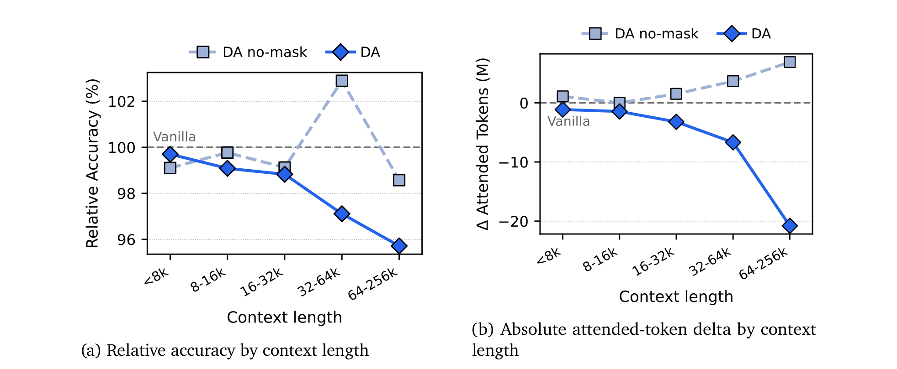
Figure 10 shows the same data as a ratio: within every context bin, DA reads only 50–64% of vanilla, an almost constant fraction — the composition "constant fractional saving × ever-growing total" explains why the absolute value scales linearly with length.
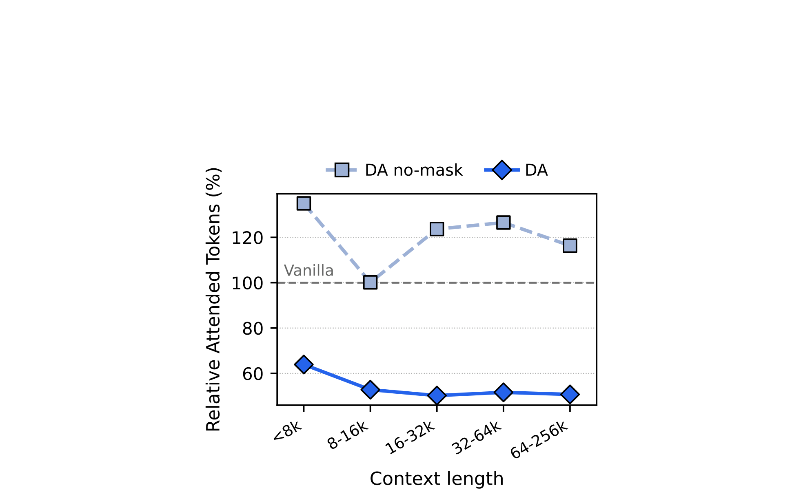
On Qwen: same per-step savings, more reliance on global mode
The corresponding results for Qwen-3.6-27B (Appendix E) reveal an interesting family difference — mechanically the per-step savings are comparable, but at long contexts Qwen spends more tokens inside the unmasked <global> mode, so its total saving shrinks:

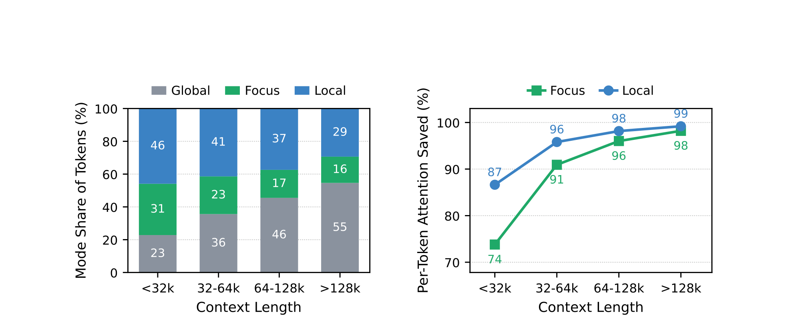
The efficiency ledger and mode-level analysis
Roofline wall-time: 0.71× / 0.77×
Converting attention savings into theoretical decode wall-time on a single B200 in bf16 at MFU 40% / MBU 70%, each decode step is billed as three terms: matmul (all projection/FFN/output-head matrix multiplies — compute-bound, growing only with step count), global memory (KV reads of the global-attention layers — the only term DA compresses), and local memory (the efficient layers' fixed per-step reads: Gemma's SWA KV cache, Qwen's GDN recurrent state — context-independent):
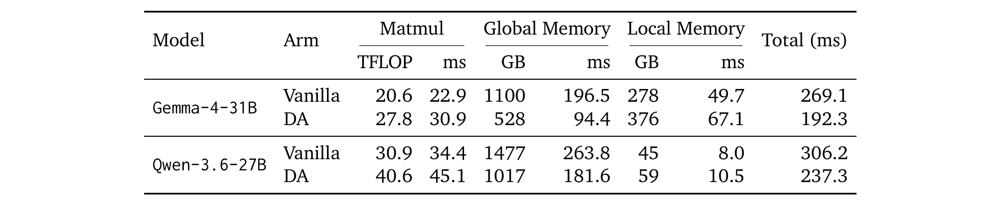
Every input to this ledger is auditable. The two models' constants (Table 4) come straight from public configurations; the two arm-dependent quantities — decode-step count $D$ and attended-token total $A$ (Table 5) — are measured from the generated responses:
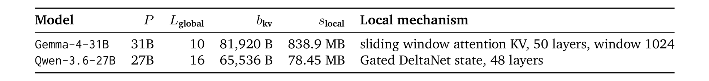
Walk the full derivation for vanilla Gemma-4-31B (Appendix C.8):
Summing the three: 269.1 ms; substituting the DA arm's $D{=}448$, $A{=}6.45\text{M}$ gives 192.3 ms. The authors are refreshingly explicit: this is a theoretical ceiling at the stated utilizations, not a measured wall time — it excludes prefill (handled by a different pool in disaggregated serving), excludes trivia like normalization/rotary embeddings, and bills reads at token granularity (a real block-aligned kernel reads a few percent more on the global term).
Mode-level analysis: where the money goes and where it's saved
Which modes do DA's own generated tokens live in? On Gemma-4-31B, <global> holds only ~27% of generated tokens while <focus> + <local> hold 73% — and the latter two are the cheap modes, reading on average only ~12% and ~6% of a vanilla step per token:
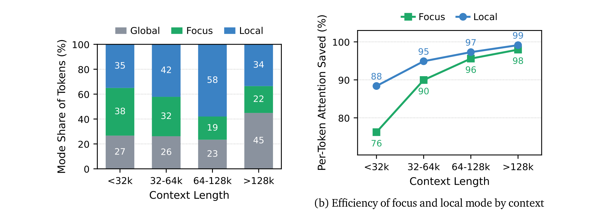
Protocol adherence: where the capability threshold sits
DA's reliability hinges on the model emitting parseable control tokens. Figure 6 tracks two metrics: the <focus> parse success rate (focus calls that parse to a valid chunk reference) climbs with scale in both families — 58% (E4B) → 99% (31B), 89% (Qwen-4B) → 99% (27B) — while focus attempts per response hover in a narrow 1.37–1.85 band independent of scale: strong models win by parsing more reliably, not by calling less. The attempt count itself is a zero-shot artifact — the model chooses how to use the protocol, not the task-optimal amount.
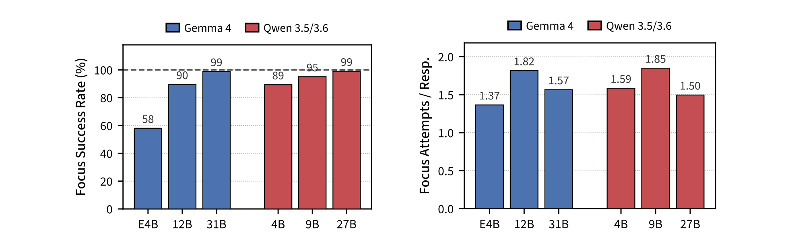
Honest failures: two structural mismatches across six sources
The paper doesn't hide its failures (Appendix D.4). Beyond the 15 main benchmarks there are six source types DA handles poorly, which the authors group into two structural mismatches with the three-mode decomposition (rather than mechanism weaknesses) — and note: even on these six, DA's per-step attention still falls 39–67%:
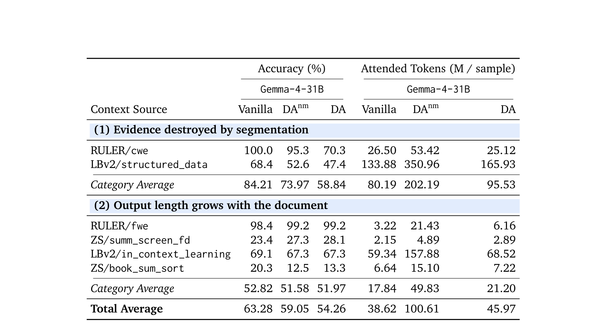
<focus> only sees the named segment, so the information never arrives and accuracy collapses from 84.21 to 58.84 (even though reads still fall). Cluster 2: output length scales with the document.fwe word-frequency enumeration, summ_screen_fd per-segment summaries, book_sum_sort full-document ordering, in_context_learning per-example reasoning — the output unit stretches with the document, and decode-step count balloons the total (17.84M→21.20M). The authors' fixes: for cluster 1, structure-aware segmentation (keep tables intact) and map-reduce-style per-segment scanning with scaffold accumulation; for cluster 2, route long outputs into <focus> to keep per-step cost bounded, or simply teach both decomposition strategies via SFT/RLVR.
Discussion, limitations, and commentary
How much room does DA still have in the 2026 architecture landscape?
A natural objection: everyone is aggressively compressing the KV cache (MLA, token merging, indexer-based sparse attention) — will global-attention reads even remain the dominant decode cost? The paper runs an architecture census as of August 2026, starting with KV bytes per context token:
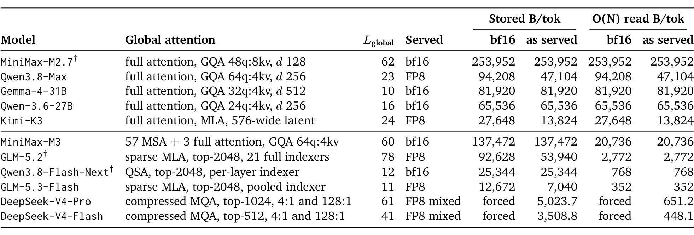
Pushing the same roofline decomposition to a 1M-token context (Table 7): in the full-attention group (Qwen-3.6-27B, Gemma-4-31B, Qwen3.8-Max, Kimi-K3, MiniMax-M3) attention accounts for 94.11–99.37% of a single decode step; even the indexer group with built-in sparsity (DeepSeek-V4-Pro/Flash, GLM-5.3-Flash) sits at 56.49–97.50% — in every row attention is the leading term, and the models with built-in sparsity are precisely those where it leads least, suggesting DA-style intervention does not conflict with architectural evolution.
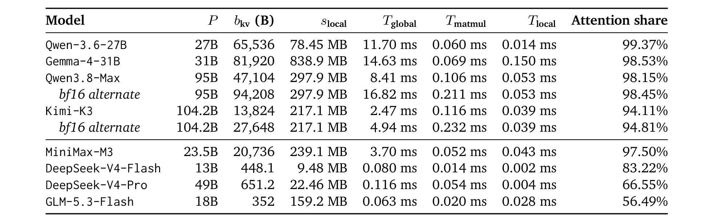
That "dominant share", however, depends strongly on context length (Table 8): the same models at 244K (the effective cap of this paper's experiments) drop to 79.6–97.5% (full-attention) and 24–90% (indexer); by 128K three indexer rows already fall below 50%. The MFU/MBU values barely matter (sweeping the reported 40–60% / 60–85% ranges moves 1M-context shares by mostly under 3 points) — context length is the decisive variable, which is why the paper elevates the 1M claim to title-level. The authors also place a bet: window lengths have historically kept growing as per-token cost falls, 1M is already the frontier standard, and aggregate attention cost is not going away.
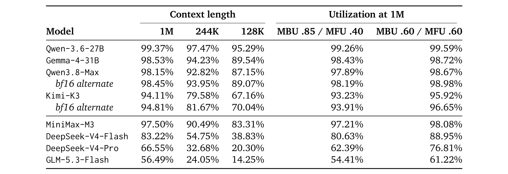
Agentic settings: retrieval does not solve the problem DA solves
One might argue: agents fetch context incrementally through tool calls, so there is no "long context" problem left. The paper's rebuttal is crisp: retrieval decides what enters the context; DA decides what gets looked at once it's in — two orthogonal decisions. Retrieval can even make things worse: every tool result stays in the context for the whole episode, though it is usually relevant only to the steps that issued it. As turns accumulate, agentic contexts land squarely in the regime where DA saves most (long context + per-step local reads). And agentic settings come with natural segments (tool calls, user turns, retrieved passages) — no need for this paper's artificial "magic chunks".
DA is "System 2" sparse attention
The paper gives DA a memorable framing: existing sparse methods infer the mask from internal activations every step — "System 1"; DA has the model decide where to look with explicit reasoning — "System 2". Three practical corollaries: (1) the strategy can be changed with one instruction, no retraining; (2) it improves automatically with model scale, protocol unchanged; (3) it can be optimized with RL exactly like System-2 reasoning itself (rewarding accuracy and attention efficiency together). One by-product the authors emphasize repeatedly — the attention plan is auditable by construction: the tokens that drive KV reads are the same tokens a human can read, two sides of the same coin for CoT supervision in AI safety. Compared with the closest prior work SSAS (per-task training, 2K context, two tasks), DA shows the behavior generalizes zero-shot with one fixed prompt across 15 tasks and 244K contexts.
Composition with modern inference stack
- With lightweight-scan sparse attention (e.g. DSA):complementary — the scan can serve DA's expensive global steps, while declarations carry the savings in the other modes; DA rewrites block tables without touching kernels, so integration is light.
- With speculative decoding:orthogonal and stacking — DA cuts per-step cost, speculation batches multiple steps into one verification; verification still reads only the masked KV. The mask is fixed within a mode, drafting proceeds under a single mask, and speculative state resets only at rare mode switches.
- With KV offloading and context compression:DA "pre-announces" the next focus set in plain text before switching — exactly the handle prefetching needs: out-of-focus segments can spill to host memory and stream back as soon as the declaration appears. Existing compression (Claude/OpenAI-style compaction) is destructive (summaries replace originals, KV is dropped, recovery needs re-prefill); DA mutates nothing and the mask is reversible, so the out-of-focus cache stays valid — the authors sketch a "reversible context compression" vision from this.
Limitations (self-stated) and our commentary
- Zero-shot strategy is suboptimal:DA runs ~1/3 more decode steps, and its decomposition may not fit every task shape; CoT has been deeply optimized by SFT/RLVR, and DA's mode-selection policy can be tuned the same way — the biggest space the authors leave for future work.
- Artificial segmentation:fixed-context benchmarks force heuristic chunking; agentic settings have natural segments where DA may fit more naturally.
- Non-thinking mode only:models can't follow the protocol inside thinking tags; but reasoning models are already trained to interleave thinking with tool calls, and exposing DA as a standard tool declaration could bring it into the very scenarios with the longest reasoning traces.
- The cost of global mode:global steps pay full attention and account for 80%+ of DA's reads; the authors propose navigating against an "in-context index" (a one-sentence description per segment), orders of magnitude smaller than the context itself.
Glossary
Hover any dotted-underlined abbreviation in the text, or come back here any time.
| Abbr. | Full name | One-line explanation |
|---|---|---|
| DA | Declarative Attention | The paper's protocol: the model declares attention spans with tags in its chain-of-thought; the engine masks the KV cache accordingly |
| DAnm | DA-no-mask | Ablation arm: the full DA prompt without attention masking, isolating the mask's contribution |
| KV cache | Key-Value Cache | Cached key/value tensors of prior tokens; read at every decode step — the bandwidth bottleneck of long-context decoding |
| CoT | Chain-of-Thought | Prompting the model to write reasoning steps before answering; DA adds "where to look" to the same chain |
| magic chunk | — | DA's name for a context segment (~2048 tokens), delivered as a simulated tool-call transcript |
| SWA | Sliding Window Attention | Attends only within a recent fixed window; used by Gemma-4's efficient layers (window 1024) |
| GDN | Gated DeltaNet | A linear-attention variant with fixed-size per-step state; used by Qwen-3.5/3.6's efficient layers |
| MFU / MBU | Model FLOPs / Bandwidth Utilization | Achieved fraction of peak FLOPS/bandwidth; the roofline ledger uses 40% for FFN and 70% for memory reads |
| roofline wall-time | — | Wall time billed at each operation's own hardware ceiling; depends only on hardware, not batch configuration |
| GQA / MLA | Grouped-Query / Multi-head Latent Attention | Two KV-compression attention families: shared kv heads / low-rank latent caching — fewer bytes per token, same read structure |
| MoE | Mixture of Experts | Sparse expert layers; only routed experts are loaded, so the FFN is compute-bound at large batch |
| NIAH | Needle In A Haystack | Retrieval task family; the RULER niah_* series — models mostly max it out in this paper |
| RULER / LBv1 / LBv2 / LooGLE / ZS | — | Five long-context benchmarks (RULER, LongBench v1/v2, LooGLE, ZeroScrolls) supplying the paper's 15 sources |
| DSA | DeepSeek Sparse Attention | Per-step top-k reads scored by a lightweight indexer (since V3.2); complements DA's global steps |
| QSA / MSA | Qwen / MiniMax Sparse Attention | Each vendor's block-sparse selection mechanism (per-layer indexer / dedicated indexer branch) |
| SSAS | Self-Selected Attention Span | Prior work: per-task fine-tuning for self-selected attention spans at 2K context; DA shows the same behavior is elicitable zero-shot |
| NSA | Native Sparse Attention | Trainable block-sparse attention; DA's block-aligned mask shares its block-sparse principle |
| vLLM | — | The open-source inference engine (PagedAttention); DA integrates via its metadata-builder hook without touching kernels |
| attention sink | — | The phenomenon of attention piling weight on the first few tokens; DA parks a fixed system instruction there (first 16 tokens) |
| prefill / decode | — | The two inference phases: prefill processes the input in parallel once; decode generates token by token; production systems usually disaggregate them |
| compaction | context compression | Summarizing/pruning history to shrink context; destructive, needs re-prefill to recover; DA's reversible mask enables "reversible compression" |
| SFT / RLVR | Supervised Fine-Tuning / RL with Verifiable Rewards | Two post-training tools; the authors suggest using them to teach better DA mode-selection policies |